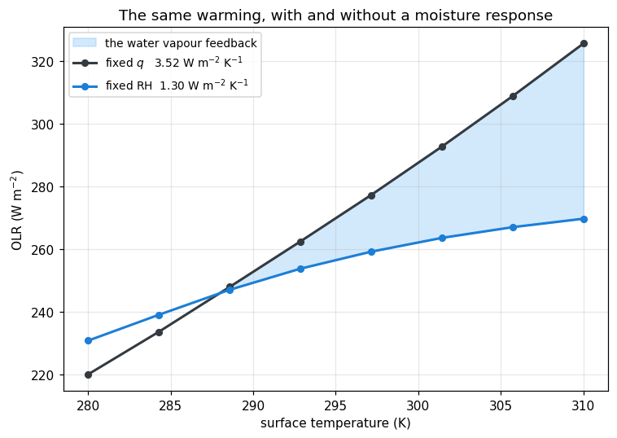
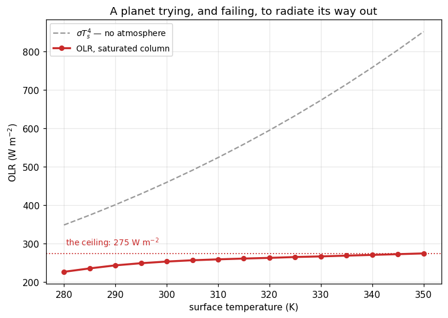

Water vapour, and the limit
Chapter 4 lists the feedbacks that turn a forcing into a temperature change, and puts water vapour at the top: warm the air and it holds more of the strongest greenhouse gas there is, which warms it further. The notes name the mechanism and give it a sign. They cannot give it a number, because the number is an integral over a spectrum.
Page 5 measured the forcing. This page measures the feedback, by the only method available to you: compute the OLR twice, once letting the moisture respond and once forbidding it, and look at the gap.
Then it keeps going. Follow the same feedback past the temperatures Earth actually reaches and it stops behaving like a feedback at all — the OLR simply refuses to rise. That ceiling is the Simpson–Nakajima limit, and it is the reason Venus has no oceans.
Two curves, one column
The column is the one pages 1 to 3 and 5 used: a 6.5 K km⁻¹ troposphere under an isothermal 200 K stratosphere. The surface temperature is the knob, and it is turned twice.
On the fixed relative humidity run, lapse_rate_sounding recomputes the humidity at each surface temperature, so a warmer column is a moister one — that is Clausius–Clapeyron doing its work. On the fixed specific humidity run the moisture is pinned to the 288 K profile and never allowed to respond. Nothing else differs between the two.

This is the figure the cell above produces. Live cells need WebAssembly; if your browser blocks it, the static version is here.
Reading the gap
The frozen-moisture curve climbs at 3.52 W m⁻² K⁻¹. That is the quantity the notes quote as λ ≈ −3.3 W m⁻² K⁻¹, and you have now computed it rather than been told it. (It is well below the bare-surface 4σT³ = 5.42 because the atmosphere warms along with the surface, so the greenhouse effect strengthens even with the moisture held still.)
Calling it “the Planck response” is a small abuse worth naming, because it is the same abuse the notes make. A pure Planck response warms every level by the same amount. This sounding does not: lapse_rate_sounding builds T(p) = T_surf (p/p_s)^(R Γ/g), so a 1 K surface warming reaches the upper troposphere as only (p/p_s)^0.19 of a kelvin — and not at all in the stratosphere, which is pinned at T_strat. What you have measured is therefore the Planck response plus an implicit lapse-rate feedback. That is why one number can stand in for both in the notes’ energy balance; it is also why you should know which one you are holding when you use it.
Let the moisture respond and the same warming yields only 1.30 W m⁻² K⁻¹. The difference, 2.22 W m⁻² K⁻¹, is the water vapour feedback. It is a positive feedback in the precise sense that matters: it subtracts from the rate at which the planet can shed heat, so a given forcing must be paid for with more warming.
Notice where the two curves cross — at 288 K, and by construction, because that is the temperature the frozen profile was frozen at. Below it the “fixed q” column is the moister of the two and radiates less. The feedback is not the gap at any one temperature; it is the difference in slope. The shading is a picture of an integral, not of a quantity.
Now carry the number into page 5’s arithmetic. Chapter 4 divides a forcing by a feedback parameter, and page 5 measured the forcing for a CO₂ doubling as 3.58 W m⁻²:
| λ (W m⁻² K⁻¹) | ΔT per doubling | |
|---|---|---|
| Planck response only (page 5’s answer) | 3.52 | 1.02 K |
| Planck + water vapour | 1.30 | 2.76 K |
Page 5 ended on 1.0 K and the observation that the real answer is nearer 3 K. One feedback, computed on one column with no clouds and no ice, closes most of that gap. This is the single largest reason climate sensitivity is not a textbook exercise in blackbody radiation.
Two honest caveats, both of which matter. The lapse rate is held at 6.5 K km⁻¹ throughout, so this is a fixed-lapse-rate water vapour feedback; letting the troposphere warm more aloft than at the surface would claw back roughly a third of it. And there are no clouds anywhere on this page.
Why the curve is so nearly straight — and where it stops being
Over 280–310 K the fixed-RH OLR looks close to linear, and that near-linearity is what makes a single feedback parameter a sensible thing to quote at all. It survives because of the window. Pages 1 and 2 showed 800–1180 cm⁻¹ radiating from within a few kilometres of the ground; while it stays open it tracks the surface temperature faithfully, holding the whole curve up even as the rest of the spectrum saturates.
So push until the window shuts. Take the column to 100% relative humidity — the most feedback-prone case there is — and run it from 280 K to 350 K.

This is the figure the cell above produces. Live cells need WebAssembly; if your browser blocks it, the static version is here.
Seventy kelvin of surface warming buys 48 W m⁻² of extra outgoing radiation. A bare rock over the same range would have gained 502. Above 310 K the curve straightens out at 0.385 W m⁻² K⁻¹ — four tenths of a watt per kelvin, against the 8.15 W m⁻² K⁻¹ a blackbody at those temperatures would manage. (The point-to-point slopes printed above scatter by about ±0.06 around that figure; that is the k-table’s interpolation between H₂O nodes showing through, not physics.) The atmosphere is roughly twenty times stiffer than the surface underneath it, and it stays that way no matter how hot the surface gets.
The window, closing
Here is where the honest diagnostic matters. Look at the window band’s outgoing flux alone and you would conclude nothing is happening — 980–1080 cm⁻¹ emits 24.8 W m⁻² at 300 K and 26.1 W m⁻² at 350 K, essentially unchanged. That flatness is the phenomenon, but you cannot see why from the flux. Put the band’s optical depth next to its brightness temperature and the mechanism is unmistakable.
The window’s column optical depth goes from 0.15 at 280 K to 94 at 350 K — a factor of six hundred — and crosses 1 at about 300 K. That crossing is the whole story. Below it the band really is a window and really does watch the ground. Above it the band has an emission level of its own, up in the atmosphere, and page 3’s argument takes over: what escapes is set by the temperature there, not at the surface.
And that temperature barely moves. The window’s brightness temperature climbs from 277 K to 290 K while the surface warms from 280 to 300 — then gains just 2.8 K over the next fifty. The dashed line in the right-hand panel is the surface temperature; watch the window peel away from it and flatten.
This is Clausius–Clapeyron closing a loop on itself. The absorber is not an independent variable you get to set, the way CO₂ was on page 5 — it is a function of temperature, and an exponential one. Warm the column and it manufactures more of its own opacity, which lifts the emission level, which is colder, which cancels most of the warming you were trying to radiate away. Every extra kelvin at the surface pays for its own blanket.
The model is being run past the range it was built for, and the page would be dishonest not to say where.
saturation_vapour_pressure is Bolton’s 1980 fit, calibrated for terrestrial temperatures — a few tens of degrees around freezing. At 350 K it is an extrapolation. The specific humidity it returns reaches 0.44 kg/kg there, an H₂O mole fraction of 0.56, which is inside earth_low_res_lw’s H₂O axis (it tops out at 1.0) but at its far end, where the table has one node per decade. Beyond about 355 K the formula returns q > 1 and the sounding becomes meaningless.
The lapse rate is held at 6.5 K km⁻¹ throughout. A genuinely saturated column follows a moist adiabat, which at these temperatures is far shallower — closer to 2 K km⁻¹ — and that difference is not a detail: the real Simpson–Nakajima limit is a statement about the moist adiabat specifically. Surface pressure is likewise pinned at 1000 hPa, though an atmosphere holding this much vapour would weigh substantially more.
None of that undoes the mechanism. The ceiling is real, and it is real for the reason the figures show. But the number below is this column’s ceiling, not Earth’s, and published estimates (≈ 282 W m⁻², Goldblatt et al. 2013) come from calculations that fix all three of these things.
Both sides of the budget
Everything so far has been longwave. A ceiling on the OLR only matters if there is something on the other side of the ledger for it to fail to balance, so bring in the shortwave.
CorkShortwaveRadiation needs two things the longwave did not: a solar zenith angle and a surface albedo. Setting the zenith to 60° and halving the Earth–Sun flux adjustment puts S/4 = 340 W m⁻² at the top of the atmosphere with a realistic slant path — the standard global-mean single-column compromise.
A cloud-free ocean reflects almost nothing: Rayleigh scattering and a 6% sea-surface albedo together return only 12% of the incoming sunlight, so the planet absorbs about 299 W m⁻². Earth’s actual planetary albedo is 0.29, and most of the difference is cloud, which this model has none of. Raising the surface albedo to 0.30 is a crude stand-in — it puts the reflected fraction in the right place while leaving the physics honest about what it is representing.
Now put the two curves on one axis.
The blue curve crosses the red one at 294.5 K, from above, and that crossing is a stable equilibrium in the ordinary way: below it the planet absorbs more than it emits and warms, above it the reverse. It is a few kelvin warmer than the real Earth because a saturated column is moister than the real one.
The orange curve never crosses. There is no surface temperature at which this planet can get rid of 299 W m⁻². Not at 300 K, not at 350 K, not — since the OLR is climbing at four tenths of a watt per kelvin — at any temperature you could reach before the oceans were gone. That is the runaway greenhouse, and the only thing separating the two curves is a change in albedo.
How close is close
The margin is easier to feel if you turn the one knob nobody on Earth controls. Absorbed sunlight is exactly proportional to the incoming flux, so a brighter sun costs no extra radiative-transfer calls at all — the same asr_cloudy array, scaled.
One per cent more sunlight moves the equilibrium 3.7 K. The fourth per cent moves it 10.4 K. The fifth moves it to nowhere at all: the ASR curve lifts clear of the OLR ceiling and the crossing does not move — it ceases to exist.
That is the shape of the thing worth taking away. The runaway is not a gradual steepening you could watch coming. It is two curves losing contact, and the last stable state before they part is nowhere near hot enough to look alarming — 319 K in the table above, warm but not obviously terminal. Systems with a ceiling on their negative feedback fail this way: fine, fine, fine, gone.
Venus receives about 1.9 times Earth’s insolation, which is not marginal at all. The Sun was 30% fainter when the Earth formed and has been brightening since; it will pass this column’s threshold in roughly a billion years, whatever anyone does about CO₂. And notice that CO₂ cannot do this, however much of it you add — page 5 showed why. Its optical depth is something you impose from outside, and its bands saturate against a fixed lapse rate. Water vapour’s optical depth is a function of the temperature it is trying to control. Only a feedback that supplies its own absorber can run away.
Every previous page ran one component. This one runs two, and the pattern is worth stating because it is the pattern every model in climt is built from.
lw = CorkLongwaveRadiation(optics="correlated_k", table="earth_low_res_lw")
sw = CorkShortwaveRadiation(optics="correlated_k", table="earth_low_res_sw")
state = get_default_state([lw, sw], grid_state=get_grid(nx=1, ny=1, nz=40))Pass the whole list to get_default_state. It reads each component’s input_properties and builds one state satisfying the union of them. Build the state from [lw] alone and the shortwave call fails on a missing zenith_angle; build it twice and you have two states that will silently drift apart. The list is how components declare what they need, and the state is the single place those needs are met.
Each component owns its own tables. lw and sw load different files — earth_low_res_lw covers 10–3250 cm⁻¹ in 14 bands, earth_low_res_sw covers 3250–30 000 cm⁻¹ in 3. Neither knows the other exists. sw.num_shortwave_bands is 3 and lw.num_longwave_bands is 14, and the _per_band diagnostics are indexed on each component’s own band axis — which is why band_limits_of(lw) takes the component as its argument rather than being a module constant. Never index a shortwave diagnostic with longwave band limits; the shapes happen not to match here, which is luck, not protection.
Two calls, two dictionaries. lw(state) and sw(state) each return their own (tendencies, diagnostics). Nothing merges them for you. This page never needs to, because it only reads fluxes — but if you wanted the column’s total heating you would add lw(state)[0]["air_temperature"] to sw(state)[0]["air_temperature"] yourself. That addition is the entire content of what a time integrator does, repeated: sum the tendencies, take a step, call everything again. sympl.AdamsBashforth does exactly that, and the next tranche begins by handing it this list.
Know which call you are paying for. In the browser the longwave costs about 70 ms and the shortwave about 6 — a factor of eleven, because the longwave table has 14 bands × 8 g-points against the shortwave’s 3 × 2, and because the longwave kernel sweeps up and down while the two-stream shortwave does not. The solar ladder above exploits the other half of this: absorbed shortwave is linear in the incident flux with everything else fixed, so seven solar scenarios reuse one sweep. Before writing a nested loop, ask which axis actually requires a new call.
Exercises
Physics
Find the limit properly. The runaway threshold is the maximum of the OLR curve, and this page only bounded it from below — the curve was still rising at 350 K, where the sounding stops being trustworthy. Extend
T_hotto 355 K, watch the surfaceqpass 0.65 kg/kg, and decide for yourself where the calculation stops meaning anything. Then look up the Komabayashi–Ingersoll limit and explain why a genuine asymptote requires the stratospheric temperature to be pinned, not the tropospheric one.Why CO₂ cannot do this. Repeat the crossing plot with the CO₂ raised to 10 000 ppm at fixed 80% relative humidity, and confirm the crossing moves but never disappears. State the difference between the two gases in one sentence that mentions Clausius–Clapeyron, and check it against page 5’s finding that the core had “run out of lapse rate” rather than out of absorber.
The window sets the ceiling. The OLR ceiling in this column is 275 W m⁻², of which the four window bands (800–1250 cm⁻¹) supply 112 — two fifths of it, from a sixth of the spectral range. Argue from the τ panel what the ceiling would be on a planet whose atmosphere had no window at all, and relate that to why the Simpson–Nakajima limit is sometimes quoted as roughly
σT⁴evaluated at the tropopause.
Code
Solve for the equilibrium instead of reading it off. Write
equilibrium_temperature(asr, lo=270.0, hi=350.0, tol=0.01)that bisects onolr_saturated(T_s) − asr, calling the radiation code inside the loop rather than interpolating a precomputed curve. Check it against the 294.5 K above, count the calls it costs, then hand itasr = 300.0and watch it converge confidently onhi— a bisection cannot fail, it can only lie. Add the guard that makes it report “no equilibrium in range” honestly.Separate the two feedbacks. The 2.22 W m⁻² K⁻¹ measured above mixes the response of the whole moisture profile. Split it: recompute the fixed-RH curve letting the humidity respond only below 500 hPa, then only above. Which half of the atmosphere carries the feedback, and does that match what page 3’s weighting function would have predicted?
Put the surface budget back in. This page balanced the top of the atmosphere. Plot the surface energy budget instead — downwelling longwave plus downwelling shortwave minus
σT_s⁴— over the same 280–350 K sweep, and note that it does not vanish at 294.5 K. Explain what is missing, and why every model that runs to equilibrium in time needs the turbulent fluxes the next tranche introduces.
That is the radiation tranche. Six pages, and not one of them integrated anything in time: every figure came from prescribing a state and asking a component what it made of it. That was deliberate. Radiative transfer is a mapping from a profile to a set of fluxes, and it is far easier to understand when nothing is moving.
But exercise 3 above has the last word. The surface budget does not close, and it cannot, because radiation alone does not carry heat away from a surface — convection and turbulence do. Chapters 10 to 12 of the notes take that up: turbulent heat exchange, dry convection, and radiative–convective equilibrium. Those need a state that evolves, which means AdamsBashforth, a timestep, and a loop — and a whole new set of ways to be wrong.
Going deeper
The runaway greenhouse is a question about a planet, not about Earth, and the same components run on other planets with other tables. Multi-planet radiation puts Mars, Venus and Titan through the machinery this page has been using, with the opacity tables each one needs — including a Venus table that has already been through the door this page has only opened.